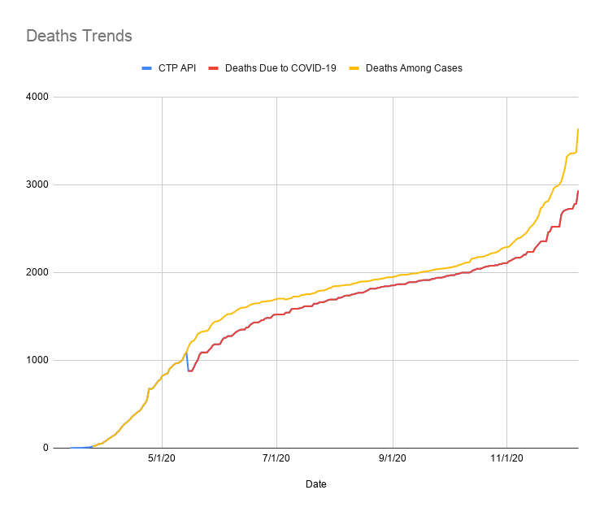

[CO] Deaths due to COVID vs. deaths among cases source switch
Issue number 1006
karaschechtman opened this issue on December 11, 2020 at 12:34 pm
Labels Data quality
State or US: CO
Describe the problem Colorado’s deaths due to COVID-19 metric is lagging its deaths among cases metric. On September 1, there was only 97 difference: 1946 deaths among cases, vs. 1849 deaths due to COVID. On December 11, there is a 759 difference—3759 deaths among cases, as opposed to 3005 deaths due to COVID. This means 20% of deaths among cases do not have death certificate data, vs. 5% in September, indicating a lag.
Link to data source https://covidtracking.com/data/state/colorado/screenshots CO’s raw data files for confirmed/probable death breakdowns: https://www.arcgis.com/home/webmap/viewer.html?url=https://services3.arcgis.com/66aUo8zsujfVXRIT/ArcGIS/rest/services/colorado_covid19_daily_state_statistics_cumulative/FeatureServer&source=sd

We are adding the breakdown for confirmed/probable from 5/15 onward because before then they were not reported on the website and do not sum CO after.txt CO Before.txt